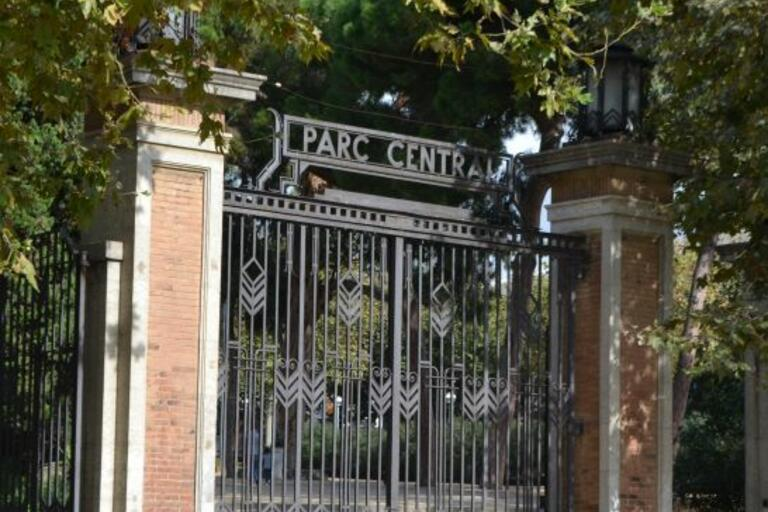

Visita · Mataró
Des de finals del segle XIX, el Parc Central esdevé un lloc tranquil dins de la vila urbana per passejar i relaxar-se una estona fora del brogit de la ciutat i s'hi troben gran varietat d'arbres i…